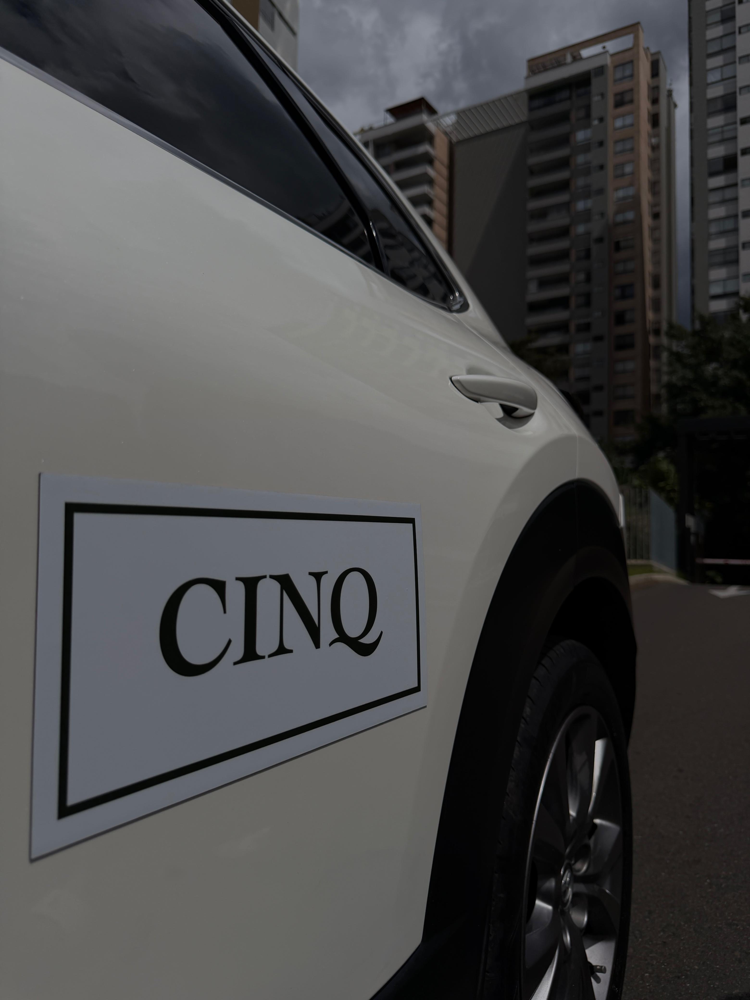
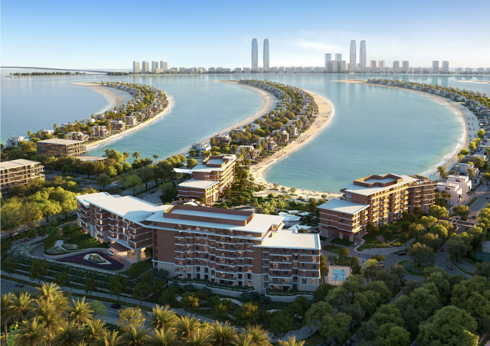

Conectando oportunidades
La diferencia está en quién es capaz de reconocerlas.

Filosofía
No vemos únicamente activos, vemos oportunidades. Cada propiedad y cada inversión tienen un contexto diferente.
Por eso creemos que toda buena decisión comienza con información.
Portafolio
Cómo trabajamos
Cada propiedad se revisa contra un estándar de fotografía, documentación y presentación antes de considerarse.
Confirmamos propietario, documentos al día y consistencia entre lo declarado y lo mostrado.
Presentamos la oportunidad a quienes buscan exactamente eso, sin intermediarios de más, sin ruido.
El mercado
Así se comportó durante 2025 el mercado del Valle de Aburrá, donde está nuestro portafolio en Colombia. No son proyecciones ni estimaciones propias: son las cifras que publica el gremio inmobiliario de la región.
Valorización real anual del suelo urbanizado
Medellín y Área Metropolitana, 2025
Valorización real anual del suelo residencial en Medellín
Estrato medio, el más dinámico: 10,1 %
Colocaciones de arriendo de vivienda usada, estratos 4 a 6
Valle de Aburrá, 2025
Menos oferta de arriendo disponible en el mercado
Con los cánones al alza: +6,5 %
El territorio
El mismo precio no dice lo mismo en cada ladera. Estos son los tres corredores del sur del Valle de Aburrá que hay que entender para leer una oportunidad aquí.
Donde empezó el portafolio
Las Antillas y el costado de Envigado que limita con Sabaneta reúnen lo que representamos aquí: edificios recientes, zonas comunes completas y una demanda que no depende de la moda del momento.
7,5 % de valorización del suelo en 2025
La segunda más alta de Antioquia
Donde está creciendo
Uno de los municipios que más rápido se ha construido en altura. Recibe a quien busca estrenar sin pagar lo que ya cuesta Envigado, y esa presión se siente en el suelo antes que en los avisos.
En el portafolio
Loma de San José, Las Lomitas y Monteazul
La referencia
Todavía no representamos nada aquí, y aun así es la vara con la que se mide el sur del valle: el punto de comparación obligado cuando alguien evalúa un precio en Envigado o en Sabaneta.
1.915 viviendas nuevas vendidas en 2025
Más que cualquier otro sector de Medellín
Dubái
Dubái es la ciudad donde se formó nuestro fundador, y uno de los mercados más abiertos al inversionista extranjero: se compra en dólares, en zonas donde un colombiano puede ser dueño pleno, y muchas veces sobre planos, pagando mientras se construye.
Con nuestro aliado allá seleccionamos proyectos de desarrolladores reconocidos y te acompañamos como aquí: información clara antes de decidir y una persona de CINQ al otro lado del WhatsApp.
Ver los proyectos →
Ofrece tu propiedad
Evaluamos cada solicitud con el mismo estándar de calidad, documentación y presentación que exigimos siempre. No todas son aceptadas.
Cuéntanos